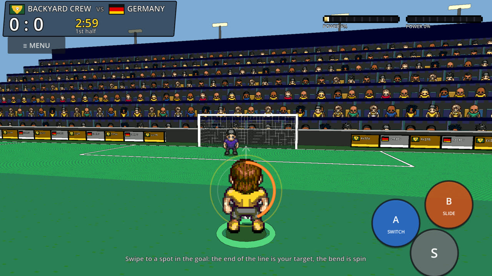
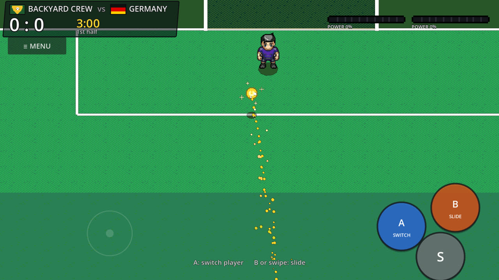
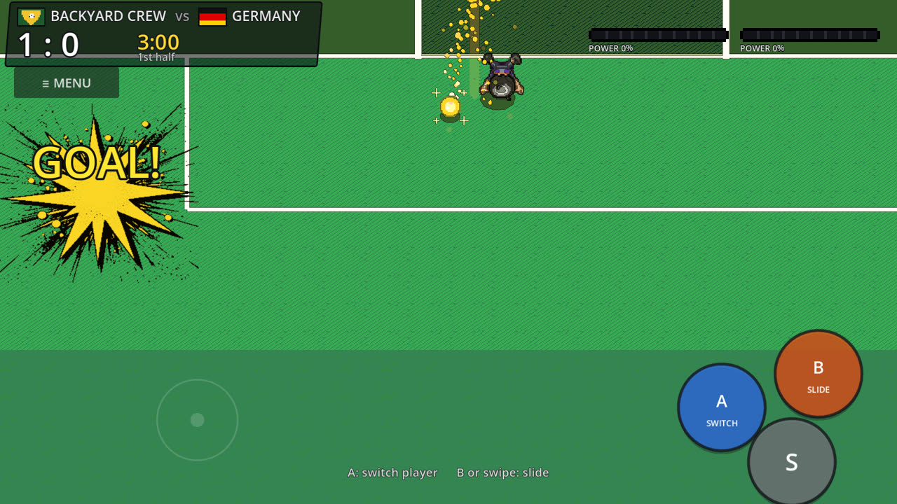
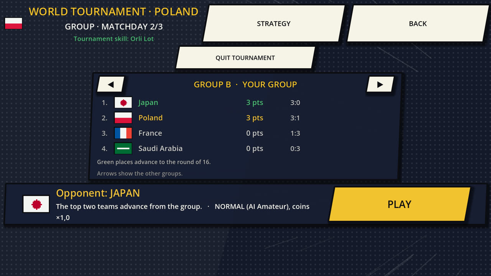

Shonen Soccer: Super Shots
Arcade manga football · formerly Kick Clash
An arcade football game that plays like a manga you can steer: eleven-a-side matches on a full-size pitch, huge Super Shots and a World Tournament of 32 national teams — all in your pocket, all offline.
Get it on Google PlayFree · Android

Screenshots




What is inside
- Swipe to shoot Pass with one tap, draw the shot with your thumb — a longer swipe hits harder, a curve adds spin.
- 32 Super Shots Fill the Power Gauge and fire your captain's Super Shot. When a rival fires one at you, a Super Counter stops it.
- Bicycle kicks and headers A high ball is a chance, not a lottery: head it, volley it, or throw yourself into a bicycle kick.
- World Tournament Groups, knockouts, golden goal and a captains' duel. Win the cup to unlock a nation's stadium and kit.
- Five arenas Stadium, caged street pitch, windy rooftop, snow with an orange ball, and a beach.
- No account, no internet Everything is saved on your phone. Play on a plane, in a basement, anywhere.
Free, with ads — and one optional purchase
The game is free and shows ads: a banner in the tournament screen and optional rewarded videos you choose to watch.
A single optional purchase unlocks the whole shop and turns the ads off for good. There is nothing else to buy.